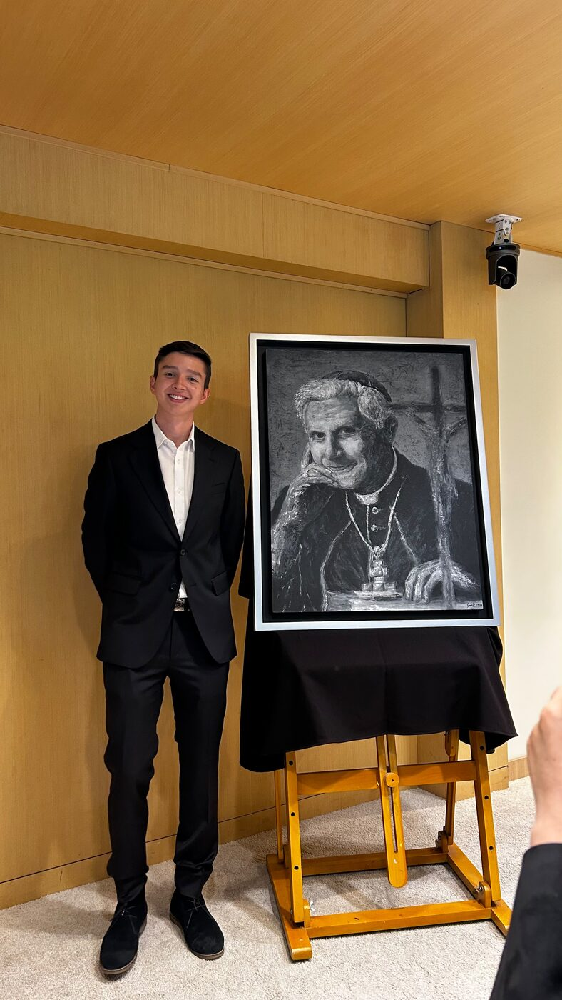
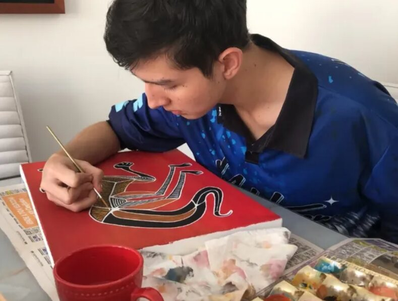
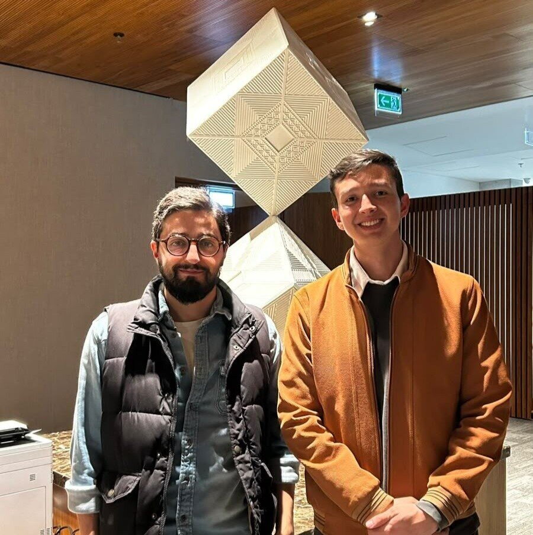

RugeR Arts
Juan Felipe Ruge R, painter.
Come in and enjoy “Explorations”, my first collection.
See the worksWorks
Red dot means sold
About

Exhibitions



Get in touch
To buy a painting, ask about a commission or arrange a studio visit, write to me directly. I usually reply within a day or two.